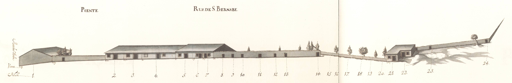

.jpg)
Praça do Gavião - Nascente.

Praça do Gavião - Nascente.
Pertencente ao complexo que tinha o centro na praça do Gavião , ligava as ruas de Santo André e da Oliveira. Artéria um pouco marginal a este conjunto, tem o seu prazo mais antigo em 1743 . Dividida em lotes, como todo o conjunto denominado de Quinteiro ou Gavião, ou, actualmente de campo Novo , tinha apenas ocupados com casas 18 dos 31 terrenos preparados para edificações. O restante espaço disponível, aqui assinalado com os n?s 8-20 e 23-24, eram as entradas ou muros de limite dos quintais da rua dos Chãos de Cima . As 20 casas desenhadas no Mappa são todas térreas, muito simples, do tipo de porta com janela lateral, mas com as «molduras» de pedra visíveis. Todas estas construções são prazos do Cabido . Mantém o nome de S. Barnabé .
Praça do Gavião - Nascente.
Praça do Gavião - Nascente.

Rua de S. Barnabé - Vista 1

Rua de S. Barnabé - Vista 2
| Número da Casa | Enfiteuta | Foro | Descrição |
|---|---|---|---|
| 1 | Sem enfiteuta | Sem foro | Pertence à casa n.° 14 da Rua de Sto. André , para onde tem a frontaria e serventia principais. |
| 2,3 e 4 | D. Agostinha Maria de Barros, enfiteuta principal do prazo do casal dos Chãos ou Quinteiro. | Sem foro | Isabel Maria de Jesus paga 3240 reis ao enfiteuta do prazo do casal dos Chãos ou Quinteiro. Encontram-se unidas desde 1743 . |
| 5 | D. Agostinha Maria de Barros, enfiteuta principal do prazo do casal dos Chãos ou Quinteiro. | Sem foro | Antónia Francisca paga 1325 reis ao enfiteuta do prazo do casal dos Chãos ou Quinteiro. Foi construída antes de 1745 . |
| 6 e 7 | Sem enfiteuta | Sem foro | Pertence ao n.° 86 da Rua dos Chãos de Cima . |
| 8 | Sem enfiteuta | Sem foro | Porta de serventia do quintal do n.° 85 da Rua dos Chãos de Cima . |
| 9 | Sem enfiteuta | Sem foro | Porta de serventia do quintal do n.° 84 da Rua dos Chãos de Cima. |
| 10 | Sem enfiteuta | Sem foro | Porta de serventia do quintal do n.° 81 da Rua dos Chãos de Cima . |
| 11 | Sem enfiteuta | Sem foro | Porta de serventia do quintal do n.° 80 da Rua dos Chãos de Cima . |
| 12 | Sem enfiteuta | Sem foro | Porta de serventia dos quintais dos n.° 77 e 78 da Rua dos Chãos de Cima . |
| 13 | Sem enfiteuta | Sem foro | Porta de serventia dos quintais dos n.° 75 e 76 da rua dos Chãos de Cima . |
| 14 | Sem enfiteuta | Sem foro | Porta de serventia do quintal do n.° 74 da Rua dos Chãos de Cima . |
| 15 | Sem enfiteuta | Sem foro | Quintal da casa n.° 72 da Rua dos Chãos de Cima . |
| 16 | Sem enfiteuta | Sem foro | Quintal da casa n.° 71 da Rua dos Chãos de Cima . |
| 17 | Sem enfiteuta | Sem foro | Quintal da casa n.° 70 da Rua dos Chãos de Cima . |
| 18 | Sem enfiteuta | Sem foro | Quintal da casa n.° 69 da Rua dos Chãos de Cima . |
| 19 | Sem enfiteuta | Sem foro | Quintal da casa n.° 68 da Rua dos Chãos de Cima . |
| 20 | Sem enfiteuta | Sem foro | Quintal da casa n.° 67 da Rua dos Chãos de Cima . |
| 21 | Sem enfiteuta | Sem foro | Pertence ao n.° 66 da Rua dos Chãos de Cima . |
| 22 | Sem enfiteuta | Sem foro | Pertence ao n.° 64 da Rua dos Chãos de Cima . |
| 23 | Sem enfiteuta | Sem foro | Porta do quintal da casa n.° 63 da Rua dos Chãos de Cima . |
| 24 | Sem enfiteuta | Sem foro | Porta do quintal da casa n.° 62 da Rua dos Chãos de Cima . Confronta, do nascente, com a viela que vai para a dita rua. |
| 25 a 37 | D. Agostinha Maria de Barros, enfiteuta principal do prazo do casal dos Chãos ou Quinteiro. | Sem foro | «Chãos de casa» pertencentes ao prazo do casal dos Chãos ou Quinteiro. O chão n.° 25 confronta, do norte, com o caminho que vai para S. Vicente . |
| 38 a 49 | D. Agostinha Maria de Barros, enfiteuta principal do prazo do casal dos Chãos ou Quinteiro. | Sem foro | Pagam foro ao enfiteuta do prazo do casal dos Chãos ou Quinteiro. |
| 50 | D. Agostinha Maria de Barros, enfiteuta principal do prazo do casal dos Chãos ou Quinteiro. | Sem foro | Pertence à casa n.° 15 da Rua de Sto. André , para onde tem a frontaria e serventia principais. |